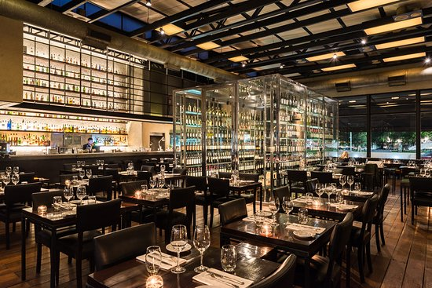

Vale la pena visitar el suburbio de San Isidro para probar los platos de cinco estrellas
que emergen de la cocina abierta de Alejandro Feraud. Este moderno bistró, que abre para el desayuno, el
almuerzo y la cena, se convirtió rápidamente en un éxito por su forma única de transformar los sabores
argentinos familiares. Asegúrese de disfrutar los postres de la pastelera estrella Yamila Di Renzo
Narda Comedor
Narda Lepes es un nombre familiar en Argentina.
La reconocida chef protagoniza programas de cocina y viajes, escribe libros de cocina,
presenta un programa de radio y vende su propia línea de productos de supermercado y electrodomésticos de
cocina. Narda Comedor,
su restaurante en el Bajo Belgrano, pone a las verduras en el escenario principal.
Muchos artículos están inspirados en los viajes de Lepes a través de Asia,
Medio Oriente y América Latina,
y un talentoso equipo de jóvenes cocineros sirve platos para el desayuno,
el almuerzo, la merienda y la cena. Narda también abrió recientemente Comedor Diario,
un café de desayuno durante todo el día en Palermo Hollywood.
La Kitchen
Ubicado en el residencial Saavedra, este favorito de la panadería y cafetería del lado
norte produce productos horneados muy memorables.
Los fosforitos dulces y salados suelen encontrarse en fiestas de cumpleaños y reuniones familiares,
pero siempre es un buen momento para disfrutar de una masa de hojaldre glaseada dulce rellena de jamón y
queso.
Muchos clientes vienen por chipás, bocadillos de pastrami sobre pletzalej y croissants repletas de mermelada
de frambuesa. La Kitchen amplió recientemente su pequeña ubicación original y ahora tiene amplios asientos en
el patio interior y exterior.

Lugares mas concurridos
Puerto Madero
Es uno de los destinos turísticos por excelencia de Buenos Aires donde las personas pueden dar un paseo y disfrutar de la vista del rio. El Puerto Madero es un barrio que rinde especial homenaje a las féminas, ya que sus calles llevan nombres de mujeres de las artes, las ciencias, la política y la cultura.
"La Boca"
Se trata de un barrio muy colorido lleno de turismo y personas que disfrutan de restaurantes especializado en carne, artistas callejeros bailando tango, y hogar del equipo de futbol Boca Juniors. Si estás ahí, no te olvides de pasar por El Caminito.
Teatro Colon
El Teatro de ópera ubicado en Buenos Aires es considerado uno de los teatros líricos más importantes del mundo y se destaca por su tamaño y acústica. El importante establecimiento es sede de la Orquesta Filarmónica, Coro Estable y el Ballet Estable del Teatro Colón. Además, se han presentado destacadas obras como La Scala de Milán y la Ópera Garnier de París.
Las mejores atracciones de BsAs
Jardin Japones
En el año 1967 para homenajear a los príncipes japoneses (los actuales emperadores) en su visita a Buenos Aires, la comunidad argentino-japonesa transformó parte del Parque Tres de Febrero en un jardín japonés, haciendo del mismo un lugar único, distinto al resto de Buenos Aires. A las especies que se encontraban entonces, se le agregaron otras autóctonas de Japón.
"Bosques de Palermo"
Conocido popularmente como los Bosques de Palermo, el parque Tres de Febrero es el espacio verde más emblemático de la Ciudad. Sus bosques, sus 4 lagos (Lago Regatas, Lago del Rosedal, Lago del Planetario y Lago Victoria Ocampo), sus plazas (¿¡sabías que está compuesto por 29 plazas!?) y los diferentes paseos se extienden a lo largo de 370 hectáreas del barrio de Palermo.
Museo de arte latinoamericano de Buenos Aires
El Museo de Arte Latinoamericano (MALBA) es uno de los más interesantes de la Ciudad: aloja la colección de arte de la Fundación Costantini, con aproximadamente 400 obras (pinturas, esculturas, grabados, fotografías y objetos) de grandes artistas latinoamericanos del siglo XX. El moderno edificio que alberga el Malba, revestido de piedra caliza y con amplias superficies de vidrio y acero, fue realizado en 1997 por el estudio cordobés Atelman-Fourcade-Tapia, ganadores de un concurso internacional cuyo jurado estuvo compuesto por los célebres arquitectos Norman Foster, César Pelli y Mario Botta.